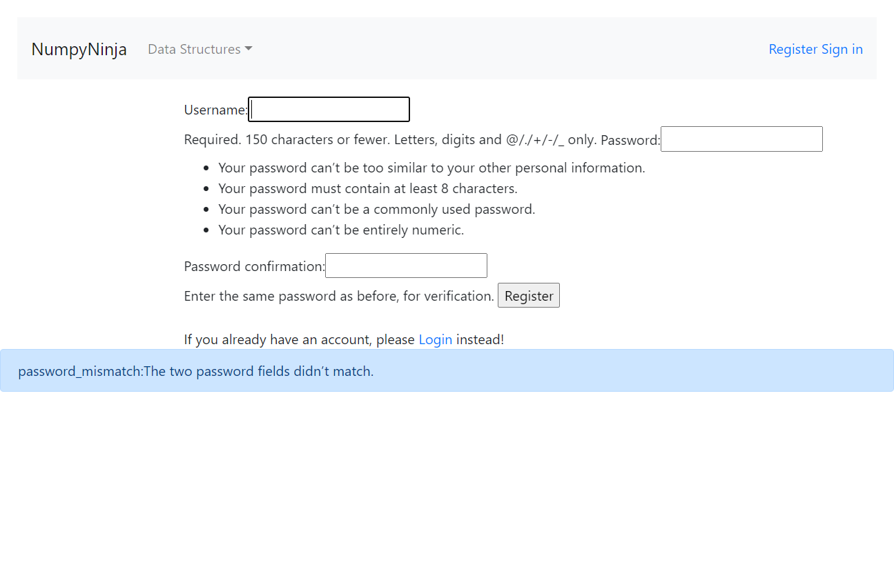

-
Validating Array operations
3:49:30 PM / 00:00:47:522 Pass
Validating Array operations
11.20.2023 3:49:30 PM 11.20.2023 3:50:18 PM 00:00:47:522 · #test-id=1Passsign in in dsalgo portal and entering to ArrayGiven User clicks Get StartedWhen User clicks on sign in buttonThen User should see login screenWhen User enters username as "goaldiggers@23" and password as "dsalgogoal"And click Login buttonThen User should see "You are logged in" msgWhen User clicks on Get started of ArrayThen User should see Array Page screenWhen User clicks on Arrays in Python in topics coveredThen Arrays in Python topic Try here should be visibleAnd User click that Arrays in Python Try hereThen User should see tryEditor pageAnd enters following code in editorprint("This code is for Arrays in Python") And clicks RunPasssign in in dsalgo portal and entering to ArrayGiven User clicks Get StartedWhen User clicks on sign in buttonThen User should see login screenWhen User enters username as "goaldiggers@23" and password as "dsalgogoal"And click Login buttonThen User should see "You are logged in" msgWhen User clicks on Get started of ArrayThen User should see Array Page screenWhen User clicks on Arrays using list in topics coveredThen Arrays using list topic Try here should be visibleAnd User click that Arrays using lists Try hereThen User should see tryEditor pageAnd enters following code in editorprint("This code is for Arrays using lists") And clicks RunPasssign in in dsalgo portal and entering to ArrayGiven User clicks Get StartedWhen User clicks on sign in buttonThen User should see login screenWhen User enters username as "goaldiggers@23" and password as "dsalgogoal"And click Login buttonThen User should see "You are logged in" msgWhen User clicks on Get started of ArrayThen User should see Array Page screenWhen User clicks on Basic Operations in list in topics coveredThen Operations in list topic Try here should be visibleAnd User click that Operations in listTry hereThen User should see tryEditor pageAnd enters following code in editorprint("This code is for Basic Operations in list") And clicks RunPasssign in in dsalgo portal and entering to ArrayGiven User clicks Get StartedWhen User clicks on sign in buttonThen User should see login screenWhen User enters username as "goaldiggers@23" and password as "dsalgogoal"And click Login buttonThen User should see "You are logged in" msgWhen User clicks on Get started of ArrayThen User should see Array Page screenWhen User clicks on Applications of array in topics coveredThen Applications of array topic Try here should be visibleAnd User click that Applications of array in listTry hereThen User should see tryEditor pageAnd enters following code in editorprint("This code is for Applications of array") And clicks Run -
Data Structure and Signout
3:50:18 PM / 00:00:11:045 Pass
Data Structure and Signout
11.20.2023 3:50:18 PM 11.20.2023 3:50:29 PM 00:00:11:045 · #test-id=122I want to use this template for my feature filePassValidating functionality of Data structure and signing out from applicationGiven User clicks Get StartedWhen User clicks on sign in buttonThen User should see login screenWhen User enters username as "goaldiggers@23" and password as "dsalgogoal"And click Login buttonThen User should see "You are logged in" msgWhen User clicks on Get started of DataStructure IntroductionThen User should see DataStructure IntroductionWhen User clicks on Time Complexity in topics coveredThen Time Complexity topic Try here should be visibleAnd User click Time Complexity Try hereThen User should see tryEditor pageAnd enters following code in editorprint("This code is for Data Structures Time complexity") And clicks RunThen navigate backAnd click on Signout -
Graph function after signing in
3:50:29 PM / 00:00:26:221 Pass
Graph function after signing in
11.20.2023 3:50:29 PM 11.20.2023 3:50:55 PM 00:00:26:221 · #test-id=157Passsign in in dsalgo portal and entering to GraphGiven User clicks Get StartedWhen User clicks on sign in buttonThen User should see login screenWhen User enters username as "goaldiggers@23" and password as "dsalgogoal"And click Login buttonThen User should see "You are logged in" msgWhen User clicks on Get started of GraphThen User should see Graph Page screenWhen User clicks on Graph in topics coveredThen Graph topic Try here should be visibleAnd User click that Try hereThen User should see tryEditor pageAnd enters following code in editorprint("This code is for Graph") And clicks RunPassGraph representation validationGiven User clicks Get StartedWhen User clicks on sign in buttonThen User should see login screenWhen User enters username as "goaldiggers@23" and password as "dsalgogoal"And click Login buttonThen User should see "You are logged in" msgWhen User clicks on Get started of GraphThen User should see Graph Page screenWhen User clicks on Graph Representations in topics coveredThen Graph Representation topic Try here should be visibleAnd User click that Graph Representation Try hereThen User should see tryEditor pageAnd enters following code in editorprint("This code is for Graph Represenation") And clicks Run -
Linked List
3:50:55 PM / 00:01:23:038 Pass
Linked List
11.20.2023 3:50:55 PM 11.20.2023 3:52:18 PM 00:01:23:038 · #test-id=218I want to use this template for my feature filePasssign in in dsalgo portal and entering to Linked List IntroductionGiven User clicks Get StartedWhen User clicks on sign in buttonThen User should see login screenWhen User enters username as "goaldiggers@23" and password as "dsalgogoal"And click Login buttonThen User should see "You are logged in" msgWhen User clicks on Get started of Linked ListThen User should see Linked List screenWhen User clicks on Introduction in topics coveredThen Introduction topic Try here should be visibleAnd User click that Introduction page Try hereThen User should see tryEditor pageAnd enters following code in editorprint("This code is for Linked List Introduction") And clicks RunPassCreating linked list validationGiven User clicks Get StartedWhen User clicks on sign in buttonThen User should see login screenWhen User enters username as "goaldiggers@23" and password as "dsalgogoal"And click Login buttonThen User should see "You are logged in" msgWhen User clicks on Get started of Linked ListThen User should see Linked List screenWhen User clicks on Creating linked list in topics coveredThen Creating linked list topic Try here should be visibleAnd User click that Creating linked list Try hereThen User should see tryEditor pageAnd enters following code in editorprint("This code is for Creating linked list") And clicks RunPassTypes of linked list validationGiven User clicks Get StartedWhen User clicks on sign in buttonThen User should see login screenWhen User enters username as "goaldiggers@23" and password as "dsalgogoal"And click Login buttonThen User should see "You are logged in" msgWhen User clicks on Get started of Linked ListThen User should see Linked List screenWhen User clicks on Types of linked list in topics coveredThen Types of linked list topic Try here should be visibleAnd User click that Types of linked list Try hereThen User should see tryEditor pageAnd enters following code in editorprint("This code is for Types of linked list") And clicks RunPassImplement linked list in python validationGiven User clicks Get StartedWhen User clicks on sign in buttonThen User should see login screenWhen User enters username as "goaldiggers@23" and password as "dsalgogoal"And click Login buttonThen User should see "You are logged in" msgWhen User clicks on Get started of Linked ListThen User should see Linked List screenWhen User clicks on Implement linked list in python in topics coveredThen Implement linked list in python topic Try here should be visibleAnd User click that Implement linked list in python Try hereThen User should see tryEditor pageAnd enters following code in editorprint("This code is for Implement linked list in python") And clicks RunPassTraversal in Linked list validationGiven User clicks Get StartedWhen User clicks on sign in buttonThen User should see login screenWhen User enters username as "goaldiggers@23" and password as "dsalgogoal"And click Login buttonThen User should see "You are logged in" msgWhen User clicks on Get started of Linked ListThen User should see Linked List screenWhen User clicks on Traversal in topics coveredThen Traversal topic Try here should be visibleAnd User click that Traversal Try hereThen User should see tryEditor pageAnd enters following code in editorprint("This code is for Traversal") And clicks RunPassInsertion in Linked list validationGiven User clicks Get StartedWhen User clicks on sign in buttonThen User should see login screenWhen User enters username as "goaldiggers@23" and password as "dsalgogoal"And click Login buttonThen User should see "You are logged in" msgWhen User clicks on Get started of Linked ListThen User should see Linked List screenWhen User clicks on Insertion in topics coveredThen Insertion topic Try here should be visibleAnd User click that Insertion Try hereThen User should see tryEditor pageAnd enters following code in editorprint("This code is for Insertion") And clicks RunPassDeletion in Linked list validationGiven User clicks Get StartedWhen User clicks on sign in buttonThen User should see login screenWhen User enters username as "goaldiggers@23" and password as "dsalgogoal"And click Login buttonThen User should see "You are logged in" msgWhen User clicks on Get started of Linked ListThen User should see Linked List screenWhen User clicks on Deletion in topics coveredThen Deletion topic Try here should be visibleAnd User click that Deletion Try hereThen User should see tryEditor pageAnd enters following code in editorprint("This code is for Deletion") And clicks Run -
Queue function after signing in
3:52:18 PM / 00:00:42:056 Pass
Queue function after signing in
11.20.2023 3:52:18 PM 11.20.2023 3:53:00 PM 00:00:42:056 · #test-id=429Passsign in in dsalgo portal and entering to QueueGiven User clicks Get StartedWhen User clicks on sign in buttonThen User should see login screenWhen User enters username as "goaldiggers@23" and password as "dsalgogoal"And click Login buttonThen User should see "You are logged in" msgWhen User clicks on Get started of QueueThen User should see Queue Page screenWhen User clicks on Implementation of Queue in topics coveredThen Implementation of Queue topic Try here should be visibleAnd User click that Implementation of Queue Try hereThen User should see tryEditor pageAnd enters following code in editorprint("This code is for Implementation of Queue") And clicks RunPasssign in in dsalgo portal and entering to QueueGiven User clicks Get StartedWhen User clicks on sign in buttonThen User should see login screenWhen User enters username as "goaldiggers@23" and password as "dsalgogoal"And click Login buttonThen User should see "You are logged in" msgWhen User clicks on Get started of QueueThen User should see Queue Page screenWhen User clicks on Implementation of Queue using collection in topics coveredThen Implementation of Queue using collection topic Try here should be visibleAnd User click that Implementation of Queue using collection Try hereThen User should see tryEditor pageAnd enters following code in editorprint("This code is for Implementation of Queue using collection") And clicks RunPasssign in in dsalgo portal and entering to QueueGiven User clicks Get StartedWhen User clicks on sign in buttonThen User should see login screenWhen User enters username as "goaldiggers@23" and password as "dsalgogoal"And click Login buttonThen User should see "You are logged in" msgWhen User clicks on Get started of QueueThen User should see Queue Page screenWhen User clicks on Implementation of Queue using array in topics coveredThen Implementation of Queue using array topic Try here should be visibleAnd User click that Implementation of array using collection Try hereThen User should see tryEditor pageAnd enters following code in editorprint("This code is for Implementation of Queue using array") And clicks RunPasssign in in dsalgo portal and entering to QueueGiven User clicks Get StartedWhen User clicks on sign in buttonThen User should see login screenWhen User enters username as "goaldiggers@23" and password as "dsalgogoal"And click Login buttonThen User should see "You are logged in" msgWhen User clicks on Get started of QueueThen User should see Queue Page screenWhen User clicks on Queue operations in topics coveredThen Queue operations topic Try here should be visibleAnd User click that Queue operations Try hereThen User should see tryEditor pageAnd enters following code in editorprint("This code is for Queue operations ") And clicks Run -
Register page
3:53:00 PM / 00:00:20:931 Fail
Register page
11.20.2023 3:53:00 PM 11.20.2023 3:53:21 PM 00:00:20:931 · #test-id=550I want to use this template for my feature fileFailRegister page validationFailRegister page validationGiven User clicks Get StartedWhen User should see Register button in home page and clicks RegisterThen User should navigate to Register pageWhen User enters "goaldiggers@133" "ssdet@01" "ssdet@01"Then User clicks on Register buttonThen User should see "New Account Created. You are logged in as goaldiggers@133"stepDefinitions.Hooks.AddScreenshot(io.cucumber.java.Scenario)imageFailRegister page validationGiven User clicks Get StartedWhen User should see Register button in home page and clicks RegisterThen User should navigate to Register pageWhen User enters "goal_diggers" "Ssdet@133" "ssdet$133"Then User clicks on Register buttonThen User should see "password_mismatch:The two password fields didn?t match."stepDefinitions.Hooks.AddScreenshot(io.cucumber.java.Scenario)image
-
Validating Sign-in
3:53:21 PM / 00:00:22:298 Pass
Validating Sign-in
11.20.2023 3:53:21 PM 11.20.2023 3:53:43 PM 00:00:22:298 · #test-id=580Passsign in dsalgo portal after entering into home pagePasssign in dsalgo portal after entering into home pageGiven User clicks Get StartedWhen User clicks on sign in buttonThen User should see login username and password fieldsWhen User enters "goaldiggers@23" and "ssdet"Then User clicks on LoginThen Login failure message is displayedPasssign in dsalgo portal after entering into home pageGiven User clicks Get StartedWhen User clicks on sign in buttonThen User should see login username and password fieldsWhen User enters "goaldiggers@23" and "goaldiggers@23"Then User clicks on LoginThen Login failure message is displayedPasssign in dsalgo portal after entering into home pageGiven User clicks Get StartedWhen User clicks on sign in buttonThen User should see login username and password fieldsWhen User enters "goaldiggers@23" and "dsalgogoal"Then User clicks on LoginThen Login failure message is displayedPasssign in dsalgo portal after entering into home pageGiven User clicks Get StartedWhen User clicks on sign in buttonThen User should see login username and password fieldsWhen User enters "helloWorld" and "hello"Then User clicks on LoginThen Login failure message is displayed -
Stack function after signing in
3:53:43 PM / 00:00:35:712 Pass
Stack function after signing in
11.20.2023 3:53:43 PM 11.20.2023 3:54:19 PM 00:00:35:712 · #test-id=638Passsign in in dsalgo portal and entering to StackGiven User clicks Get StartedWhen User clicks on sign in buttonThen User should see login screenWhen User enters username as "goaldiggers@23" and password as "dsalgogoal"And click Login buttonThen User should see "You are logged in" msgWhen User clicks on Get started of StackThen User should see Stack Page screenWhen User clicks on Operations in Stack in topics coveredThen Operations in Stack topic Try here should be visibleAnd User click that Operations in Stack Try hereThen User should see tryEditor pageAnd enters following code in editorprint("This code is for Operations in Stack") And clicks RunPasssign in in dsalgo portal and entering to StackGiven User clicks Get StartedWhen User clicks on sign in buttonThen User should see login screenWhen User enters username as "goaldiggers@23" and password as "dsalgogoal"And click Login buttonThen User should see "You are logged in" msgWhen User clicks on Get started of StackThen User should see Stack Page screenWhen User clicks on Implementation in Stack in topics coveredThen Implementation in Stack topic Try here should be visibleAnd User click that Implementation in Stack Try hereThen User should see tryEditor pageAnd enters following code in editorprint("This code is for Implementation in Stack") And clicks RunPasssign in in dsalgo portal and entering to StackGiven User clicks Get StartedWhen User clicks on sign in buttonThen User should see login screenWhen User enters username as "goaldiggers@23" and password as "dsalgogoal"And click Login buttonThen User should see "You are logged in" msgWhen User clicks on Get started of StackThen User should see Stack Page screenWhen User clicks on Applications in Stack in topics coveredThen Applications in Stack topic Try here should be visibleAnd User click that Applications in Stack Try hereThen User should see tryEditor pageAnd enters following code in editorprint("This code is for Applications in stack") And clicks Run -
Validating Tree operations
3:54:19 PM / 00:01:08:591 Pass
Validating Tree operations
11.20.2023 3:54:19 PM 11.20.2023 3:55:28 PM 00:01:08:591 · #test-id=729Passsign in in dsalgo portal and entering to TreeGiven User clicks Get StartedWhen User clicks on sign in buttonThen User should see login screenWhen User enters username as "goaldiggers@23" and password as "dsalgogoal"And click Login buttonThen User should see "You are logged in" msgWhen User clicks on Get started of TreeThen User should see Tree Page screenWhen User clicks on Overview of Tree in topics coveredThen Overview of Tree topic Try here should be visibleAnd User click that Overview of Tree Try hereThen User should see tryEditor pageAnd enters following code in editorprint("This code is for Overview of Tree") And clicks RunPasssign in in dsalgo portal and entering to TreeGiven User clicks Get StartedWhen User clicks on sign in buttonThen User should see login screenWhen User enters username as "goaldiggers@23" and password as "dsalgogoal"And click Login buttonThen User should see "You are logged in" msgWhen User clicks on Get started of TreeThen User should see Tree Page screenWhen User clicks on Terminologies in topics coveredThen Terminologies topic Try here should be visibleAnd User click that Terminologies Try hereThen User should see tryEditor pageAnd enters following code in editorprint("This code is for Terminologies ") And clicks RunPasssign in in dsalgo portal and entering to TreeGiven User clicks Get StartedWhen User clicks on sign in buttonThen User should see login screenWhen User enters username as "goaldiggers@23" and password as "dsalgogoal"And click Login buttonThen User should see "You are logged in" msgWhen User clicks on Get started of TreeThen User should see Tree Page screenWhen User clicks on Types of trees in topics coveredThen Types of trees topic Try here should be visibleAnd User click that Types of trees Try hereThen User should see tryEditor pageAnd enters following code in editorprint("This code is for Types of trees ") And clicks RunPasssign in in dsalgo portal and entering to TreeGiven User clicks Get StartedWhen User clicks on sign in buttonThen User should see login screenWhen User enters username as "goaldiggers@23" and password as "dsalgogoal"And click Login buttonThen User should see "You are logged in" msgWhen User clicks on Get started of TreeThen User should see Tree Page screenWhen User clicks on Tree traversals in topics coveredThen Tree traversals topic Try here should be visibleAnd User click that Tree traversals Try hereThen User should see tryEditor pageAnd enters following code in editorprint("This code is for Tree traversals") And clicks RunPasssign in in dsalgo portal and entering to TreeGiven User clicks Get StartedWhen User clicks on sign in buttonThen User should see login screenWhen User enters username as "goaldiggers@23" and password as "dsalgogoal"And click Login buttonThen User should see "You are logged in" msgWhen User clicks on Get started of TreeThen User should see Tree Page screenWhen User clicks on Binary trees in topics coveredThen Binary trees topic Try here should be visibleAnd User click that Binary trees Try hereThen User should see tryEditor pageAnd enters following code in editorprint("This code is for Binary trees") And clicks RunPasssign in in dsalgo portal and entering to TreeGiven User clicks Get StartedWhen User clicks on sign in buttonThen User should see login screenWhen User enters username as "goaldiggers@23" and password as "dsalgogoal"And click Login buttonThen User should see "You are logged in" msgWhen User clicks on Get started of TreeThen User should see Tree Page screenWhen User clicks on Binary search trees in topics coveredThen Binary search trees topic Try here should be visibleAnd User click that Binary search trees Try hereThen User should see tryEditor pageAnd enters following code in editorprint("This code is for Binary search trees") And clicks Run
-
org.openqa.selenium.TimeoutException
2 tests
org.openqa.selenium.TimeoutException
2 failedStatus Timestamp TestName Fail 15:53:05 PM Then User should see "New Account Created. You are logged in as goaldiggers@133" Register page.Register page validation.Then User should see "New Account Created. You are logged in as goaldiggers@133"Fail 15:53:15 PM Then User should see "password_mismatch:The two password fields didn?t match." Register page.Register page validation.Then User should see "password_mismatch:The two password fields didn?t match."
-
@Tree
6 tests
@Tree
6 passedStatus Timestamp TestName Pass 15:54:19 PM sign in in dsalgo portal and entering to Tree Validating Tree operations.sign in in dsalgo portal and entering to TreePass 15:54:30 PM sign in in dsalgo portal and entering to Tree Validating Tree operations.sign in in dsalgo portal and entering to TreePass 15:54:42 PM sign in in dsalgo portal and entering to Tree Validating Tree operations.sign in in dsalgo portal and entering to TreePass 15:54:55 PM sign in in dsalgo portal and entering to Tree Validating Tree operations.sign in in dsalgo portal and entering to TreePass 15:55:06 PM sign in in dsalgo portal and entering to Tree Validating Tree operations.sign in in dsalgo portal and entering to TreePass 15:55:17 PM sign in in dsalgo portal and entering to Tree Validating Tree operations.sign in in dsalgo portal and entering to Tree -
@Array
4 tests
@Array
4 passedStatus Timestamp TestName Pass 15:49:30 PM sign in in dsalgo portal and entering to Array Validating Array operations.sign in in dsalgo portal and entering to ArrayPass 15:49:43 PM sign in in dsalgo portal and entering to Array Validating Array operations.sign in in dsalgo portal and entering to ArrayPass 15:49:53 PM sign in in dsalgo portal and entering to Array Validating Array operations.sign in in dsalgo portal and entering to ArrayPass 15:50:06 PM sign in in dsalgo portal and entering to Array Validating Array operations.sign in in dsalgo portal and entering to Array -
@test
6 tests
@test
4 passed 2 failedStatus Timestamp TestName Pass 15:50:18 PM Validating functionality of Data structure and signing out from application Data Structure and Signout.Validating functionality of Data structure and signing out from applicationPass 15:50:29 PM sign in in dsalgo portal and entering to Graph Graph function after signing in.sign in in dsalgo portal and entering to GraphPass 15:50:41 PM Graph representation validation Graph function after signing in.Graph representation validationFail 15:53:00 PM Register page validation Register page.Register page validationFail 15:53:10 PM Register page validation Register page.Register page validationPass 15:53:43 PM sign in in dsalgo portal and entering to Stack Stack function after signing in.sign in in dsalgo portal and entering to Stack -
@linkedlist
7 tests
@linkedlist
7 passedStatus Timestamp TestName Pass 15:50:55 PM sign in in dsalgo portal and entering to Linked List Introduction Linked List.sign in in dsalgo portal and entering to Linked List IntroductionPass 15:51:07 PM Creating linked list validation Linked List.Creating linked list validationPass 15:51:19 PM Types of linked list validation Linked List.Types of linked list validationPass 15:51:31 PM Implement linked list in python validation Linked List.Implement linked list in python validationPass 15:51:43 PM Traversal in Linked list validation Linked List.Traversal in Linked list validationPass 15:51:54 PM Insertion in Linked list validation Linked List.Insertion in Linked list validationPass 15:52:06 PM Deletion in Linked list validation Linked List.Deletion in Linked list validation -
@Queue
4 tests
@Queue
4 passedStatus Timestamp TestName Pass 15:52:18 PM sign in in dsalgo portal and entering to Queue Queue function after signing in.sign in in dsalgo portal and entering to QueuePass 15:52:29 PM sign in in dsalgo portal and entering to Queue Queue function after signing in.sign in in dsalgo portal and entering to QueuePass 15:52:39 PM sign in in dsalgo portal and entering to Queue Queue function after signing in.sign in in dsalgo portal and entering to QueuePass 15:52:50 PM sign in in dsalgo portal and entering to Queue Queue function after signing in.sign in in dsalgo portal and entering to Queue -
@SignIn
4 tests
@SignIn
4 passedStatus Timestamp TestName Pass 15:53:21 PM sign in dsalgo portal after entering into home page Validating Sign-in.sign in dsalgo portal after entering into home pagePass 15:53:26 PM sign in dsalgo portal after entering into home page Validating Sign-in.sign in dsalgo portal after entering into home pagePass 15:53:31 PM sign in dsalgo portal after entering into home page Validating Sign-in.sign in dsalgo portal after entering into home pagePass 15:53:38 PM sign in dsalgo portal after entering into home page Validating Sign-in.sign in dsalgo portal after entering into home page
Started
Nov 20, 2023 03:49:29 PM
Ended
Nov 20, 2023 03:55:28 PM
Features Passed
8
Features Failed
1
Features
Scenarios
Steps
Timeline
Tags
| Name | Passed | Failed | Skipped | Others | Passed % |
|---|---|---|---|---|---|
| @Tree | 6 | 0 | 0 | 0 | 100% |
| @Array | 4 | 0 | 0 | 0 | 100% |
| @test | 4 | 2 | 0 | 0 | 66.667% |
| @linkedlist | 7 | 0 | 0 | 0 | 100% |
| @Queue | 4 | 0 | 0 | 0 | 100% |
| @SignIn | 4 | 0 | 0 | 0 | 100% |